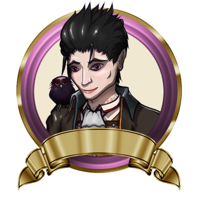
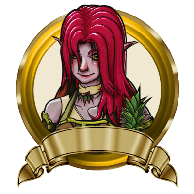
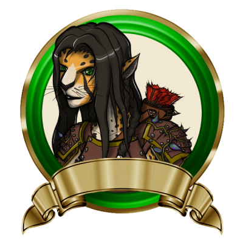
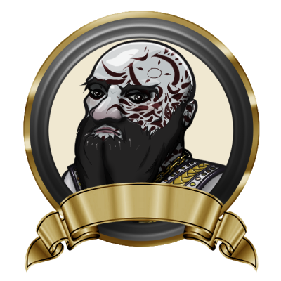
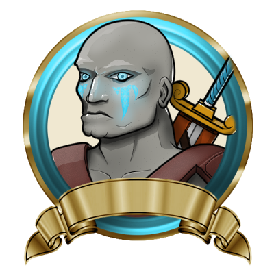
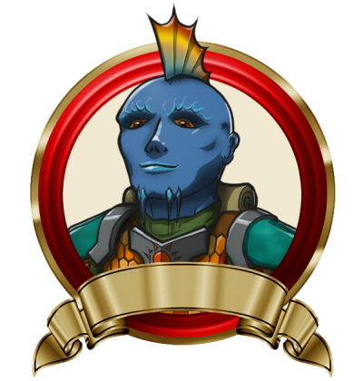

Party Name
Guardians of Rectitude And Death Serene(G. R. A. D. S.)
Characters
"L"

Level 5 Half-elf Warlock
Alignment: Lawful
Title: Infernal Scribe
Familiar: Bob
Magical Items
Multimodal

Level 5 Firbolg Druid [Circle of Regrowth]
Alignment: Good
Title: The Lifegiver
Magical Items
Nassirra

Level 5 Prowler Tabaxi Ranger
Alignment: Chaotic good
Title: Reach of Reclamation
Rasputin Frostbeard

Level 5 Arctic Dwarf Monk
Alignment: Lawful
Title: Maw of the Demon Lord
Magical Items
Ün-Kell

Level 5 Goliath Barbarian
Alignment: Good
Title: Visage of Ralthok
Magical Items
Zieg

Level 5 Triton Cleric
Alignment: Lawful good
Title: Lantern of Hope
Magical Items